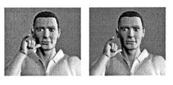
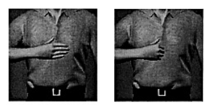

People often assume that signed languages only involve making signs that correspond to words of
a spoken language. But this is not true; signed languages are their own languages, with their own complex
grammars (remember what "grammar" is, based on what you learned about in the "Introduction to linguistics"
module) that do not necessarily correspond to any spoken language. There is not just one "sign language",
there are many signed languages (just like there are many spoken languages), and they are not merely
translations of spoken language. For example, someone who uses American Sign Language is not just making
signs of English words; they are using a whole other language. And signed languages do not always closely
correspond to the spoken languages spoken in the same region; for example, American English and British English
are pretty similar languages and are both quite different from French, but American Sign Language and French Sign
Language are pretty similar languages and are both quite different from British Sign Language.
Signed languages, like spoken languages, have phonetics. But phonetics in spoken language
is about describing sounds and how we make sounds. For signed languages, on the other hand, phonetics
is about describing signs, and how we make signs. So, just as spoken
languages need a system of phonetic concepts to describe what we do with our mouth to make sounds, signed
languages need a system of phonetic concepts to describe what we do with our hands and bodies to make signs.
Go through the activities below to learn about some phonetic concepts for signed languages.
As we saw previously, consonants in spoken language can be described with about three phonetic features.
(Do you remember what these features were?)
Watch the first 45 seconds or so of the below video to learn the ASL (American Sign Language) sign for
"MOTHER". What features do you think would be useful to describe this sign?
Recall that, when we talked about phonetic features for consonants, we could find words that differ in just
one feature (for example, sun and ton start with different manners of articulation—sun
starts with a fricative whereas ton starts with a stop). We can do the same in signed languages.
Continue watching the same video from the previous exercise until you learn the sign for "FATHER". Compare "FATHER"
and "MOTHER". What is the one feature that's different between them?
You probably noticed that the signs for "MOTHER" and "FATHER" are the same in pretty much every way, with one
key difference: the place where the hand is. For "MOTHER" it's near the chin, whereas for "FATHER" it's near
the forehead.
This is place of articulation. This term should sound familiar, because it's also used for describing
consonants in spoken language. Just like a spoken sound is made by constricting the airflow in some place,
signs in signed languages are made by putting one or both hands in some place.
There are many possible places of articulation. For example, the ASL sign for "YESTERDAY" starts with the hand touching
the cheek, whereas the ASL sign for "HANGOVER" looks similar but starts with the hand touching the neck, as shown
in this pictures excerpted from Emmorey et al. (2003)
(there's also another important difference between these signs, as we'll see shortly). The one on the left is
"YESTERDAY" and the one on the right is "HANGOVER":

Another important feature we can see is hand shape. The signs for "MOTHER" and "FATHER" have
all five fingers sticking out, whereas the signs we see above for "YESTERDAY" and "HANGOVER" have three fingers
curled. We can also see hand shape differences if we compare the signs for "PLEASE" and "SORRY" shown below,
again excerpted from Emmorey and colleagues (2003); "PLEASE" is on the left and "SORRY" on the right:

Comparing these examples we can see another important feature: orientation, i.e., the direction the hand is facing.
For instance, in "MOTHER" and "FATHER" the hand is oriented vertically such that the fingers are pointing up,
whereas in "SORRY" and "PLEASE" it's oriented horizontally. Likewise, in "MOTHER" and "FATHER" the palm is facing
left, whereas in "SORRY" and "PLEASE" it's facing back towards the body.
One more important feature, which we can't see in a static picture but which you will have seen in the videos, is
movement. Many signs involve moving the hand. If you go back and watch the videos for
"YESTERDAY" and "HANGOVER", you will see that they differ not just in the starting places of articulation, but
also in the way and direction that the hand moves.
The above has been a simplified overview of some features of signed languages. As we can see, some of these features
may themselves consist of multiple features (e.g., "orientation" might be a cover-all term for several things, since
two different signs could be oriented in the same way around the x-axis but a different way around the z-axis, or
whatever; if we wanted to we could break down orientation into e.g. pitch, yaw, and roll). And there are
additional features we have not considered; for example, parts of the face can also be involved (some signs
involve raising the eyebrows and things like that). But the same is true of our overview of features of spoken
languages; for both signed and spoken languages, there are different theories and models which assume slightly
different sets of features.
To sum up, most signs are made by putting the hand in some place,
with some shape and some orientation, and possibly moving the hand in some
direction; things other than the hands (e.g., parts of the face) can also be involved. These features (place of articulation,
hand shape, orientation, and movement) can help us describe any sign, just as features like place of articulation,
manner of articulation, and voicing can help us describe any spoken consonant. For an overview of these
concepts, as well as some useful background linguistic and sociological information about signed
languages, see section 2.1 "Classifying Signs" from Essentials of Linguistics.
Reflect on what you learned in this module. There are no specific criteria for what a reflection
should be like, but it should be something to help you organize and cement the things you learned. To be useful,
a reflection should focus on the content, not on affective judgments (i.e., your reflection should be more than just
"I enjoyed this module", "I thought this module was very useful", etc.—although if you found the module useless
or unenjoyable, you are welcome to say so and explain why, as this will be helpful both for you [it gives you a
chance to articulate what you already know, what you think you need, and how you think the module didn't help
you get that] and for me [it will help me improve this module in the future]).
Some possible things to discuss (although you can also discuss other things, and you don't need to discuss all of these):
What key concepts did you learn?
Was there anything you changed your mind about—anything that you misunderstood before and understand
differently now?
How will you be able to use these concepts in the future?
Is there anything you feel you still don't understand, or have questions about?
When you finish this activity, you are done with the module (assuming all your work on this and the
previous tasks has been satisfactory). You can return to the module homepage to review this
module, or return to the class homepage to select a different module or assignment to do now.